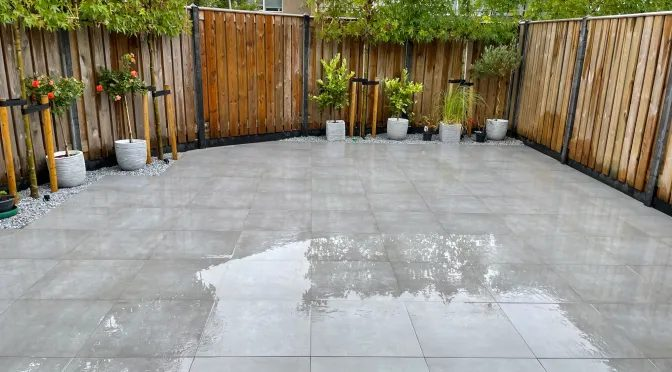

Bestrating
Sierbestrating, terrassen en trappen
Terrassen, paden en trappen, aangelegd met sierbestrating, natuursteen en hardhout.
C. Witteman ontwerpt en legt tuinen aan voor particulieren, bedrijven en overheidsinstellingen. Met oog voor detail en gevoel voor mogelijkheden.

Van het ontwerp tot de aanleg van terras, vijver, overkapping en tuinhuis. Advies, ontwerp en aanleg bij elkaar, zodat u jarenlang van uw tuin geniet.
Terrassen, paden en trappen, aangelegd met sierbestrating, natuursteen en hardhout.

Een vijver, een jacuzzi op een vlonder of een gazon van kunstgras.

Een overkapping, een tuinhuis of blokhut, een schutting of sierhekwerk. Ook speeltoestellen.





Witteman adviseert, ontwerpt en legt uw droomtuin aan. Met opbouwende ideeën en gevoel voor mogelijkheden brengt hij tuinprojecten telkens tot een goed einde.
Zo kunt u jarenlang van uw tuin genieten, geheel passend bij uw wensen.